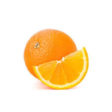

A narancs legfeljebb 8 m magas, örökzöld, alacsonyan elágazó, terebélyes, gömbölyded koronájú fa. Fiatal hajtásai szögletesek és csavarodottak; a levélhónaljakban hajlékony tövisek ülnek. Levelei szórt állásúak, aromás illatúak. A levélnyél 1-3 cm hosszú, keskeny-szárnyas, a lemez tojásdad vagy elliptikus, lekerekített vállú, hullámos vagy csipkés szélű. Erős illatú virágainak átmérője az 5 cm-t elérheti, egyesével vagy legfeljebb 6 tagú fürtben fejlődnek a levélhónaljban; a zöld csésze 5 rövid cimpájú, az 5, hosszúkás-tojásdad szirom fehér szín